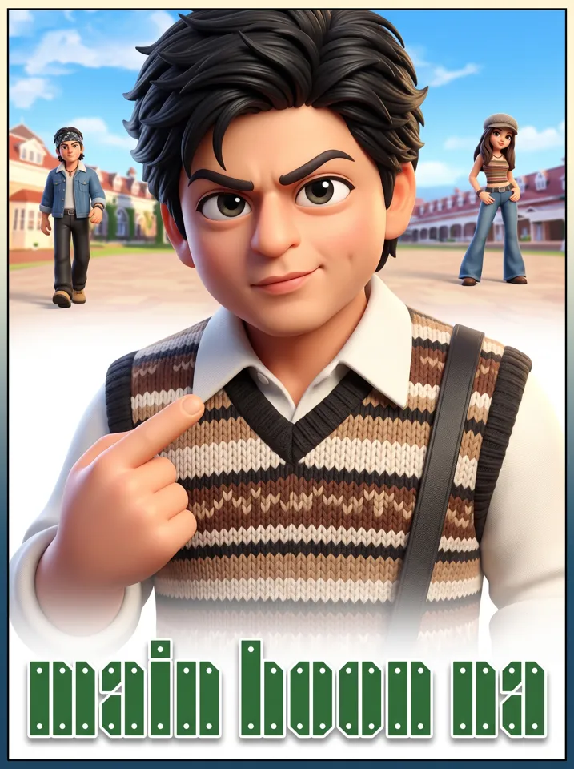
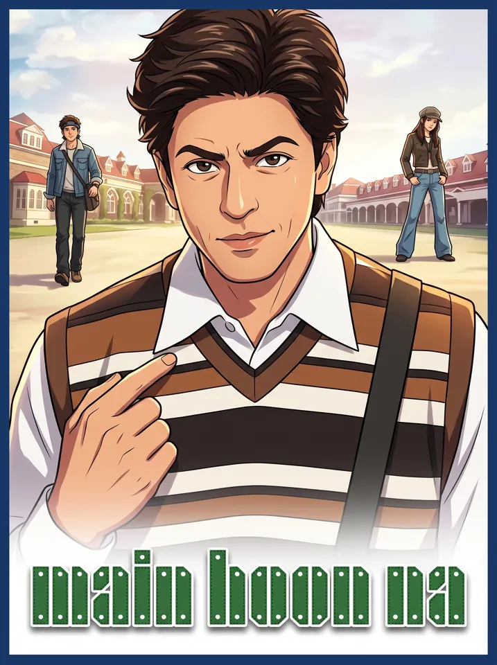

HotNew styles
Kingmaker
By Agar Main King Hota · Shailja Gupta
Pick any of his 83 films and the style you want: the original, 3D Pop or Anime, with more styles on the way. Cast yourself and your friends, add your line, get your poster.